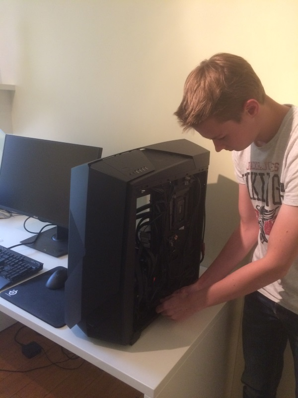

On 23 February 1999, a new IT expert was born. They named him Wout. Currently he’s in the last year of ICT at the high school called Immaculata, at the age of 17. The person I’m talking about is obviously myself.
It all began when my dad brought home a computer for his work. I was very curious so I took a look at my dad’s computer when he wasn’t home. After a few minutes of trying to figure out how everything worked, I managed to boot the computer. Luckily for me my dad didn’t have a password. I immediately fell in love with the computer and from that day I knew I wanted to learn more about computers.
Of course my dad found out that I had used his computer but he wasn’t angry at all, instead he showed me properly how it worked and he let me play some games. I visited various game sites like “spelen.nl” to play my games. I liked it so much that I almost played every day. My dad had trouble trying to get me away from the computer so he bought me my own computer. At the age of six I had my first laptop.
Now that I’m older, IT is a big part of my lifestyle. I use my computer almost every day and I keep expanding my knowledge about computers. One of my biggest hobbies is, like you probably already guessed, gaming. Games are very hardware intensive to run, so in order to enjoy my games properly, I needed a better computer. And that was a perfect excuse to build my own computer. I could’ve just bought one but I wanted to test my skills and it’s also a lot better to do it yourself. It’s cheaper and more future proof because you are not bound to a company and you can upgrade it any time you want without any compatibility issues. In the meantime, I have built multiple computers for some of my friends and family. The neighbours, my friends, family, etc., they all come to me when they have any sort of problem with their computers. So they kind of see me as an expert.
I have achieved quite a lot in gaming already. One of my most recent achievements was winning a screenshot contest of the racing game: The Crew. Of the five million players who participated in the contest, I got in the top 10. That means that my picture is pretty good. My reward was 1 million in-game credits which is valued at around 200 euro. I’m now in the top 1000 of the richest players in the game.
When I’m not gaming or building a computer, I learn about software development. This is what we do during IT lessons too. I enjoy it a lot and I will probably continue studying IT, most likely software development. So like I already said, IT has become quite important for me and I will keep on improving my knowledge about it.
